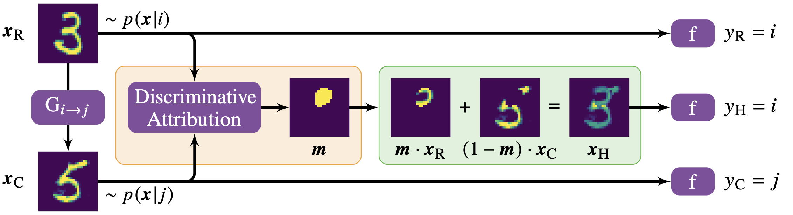

Nils Eckstein
Machine Learning Research Scientist
CV ContactAbout Me
Hi, I am Nils. I am a machine learning researcher working on DNN interpretability. Before that I was doing my PhD at ETH Zurich and HHMI Janelia Research Campus where I worked on the development of computer vision algorithms for the analysis of large scale biological image datasets, in particular the recently imaged fruit fly brain (zoom in to see individual neurons, mitochondria and other structures). Before becoming fascinated by (real & artificial) brains, I studied physics and worked on simulating the supermassive active black holes in the center of galaxies. Besides that I like to make music, dabble in generative art, and think about how to become immortal. I believe that we might be the last generation of humans that still have to die. Depressing, right?
Projects
Microtubule Tracking in large scale EM datasets

Neurotransmitter Classification

Discriminative Attribution from Counterfactuals
Reverse game of life

A strange model of computation - Integer Gradient Descent

Comatch - Graph matching minimizing topological errors